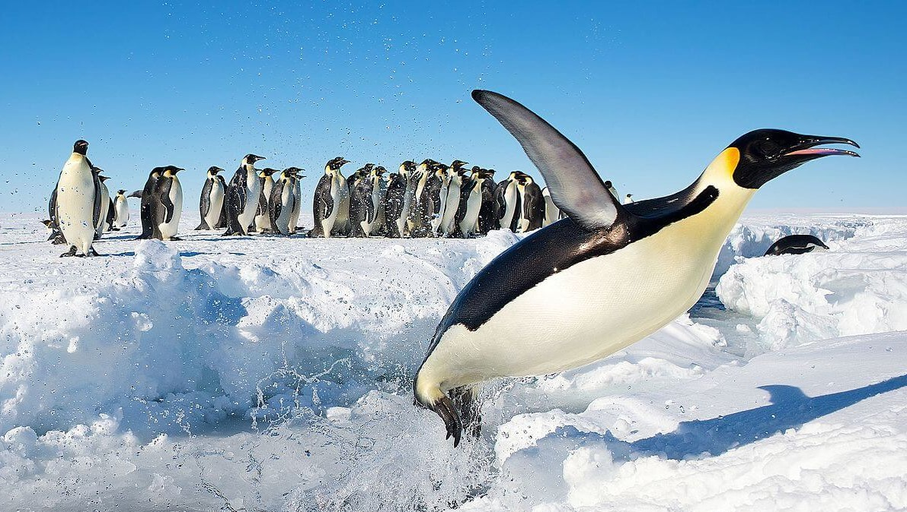

Los guardianes del hielo: la increíble vida secreta de los pingüinos
Publicado por Nicolas Fanello en Octubre
Bajo el silencio helado de la Antártida, un grupo de figuras negras y blancas avanza tambaleándose sobre el hielo. A primera vista pueden parecer torpes, pero los pingüinos son verdaderos sobrevivientes de un mundo extremo. Con temperaturas que pueden alcanzar los –60 °C, estos animales han desarrollado una vida llena de ingenio, cooperación y ternura en medio del frío más intenso del planeta.
Cuando llega el invierno austral, los pingüinos emperador —los más grandes de todos— inician un viaje épico hacia el corazón del continente helado. Allí, los machos se reúnen para incubar los huevos mientras las hembras recorren decenas de kilómetros en busca de alimento. Durante semanas enteras, los machos soportan las tormentas abrazados unos a otros, formando una gran masa compacta que conserva el calor y mantiene con vida a la próxima generación.
Pero los pingüinos no solo viven en la Antártida. Hay especies que habitan en las costas rocosas de Sudáfrica, en las islas Galápagos e incluso en Sudamérica, donde comparten las playas con los turistas. Cada especie ha encontrado su propio equilibrio entre el mar y la tierra, entre la ternura y la supervivencia.
Más allá de su aspecto adorable, los pingüinos son símbolos de resiliencia. En un mundo que cambia rápidamente por el calentamiento global, estos guardianes del hielo nos recuerdan la importancia de cuidar los ecosistemas y proteger la vida que florece en los lugares más inhóspitos del planeta.
Anterior Siguiente